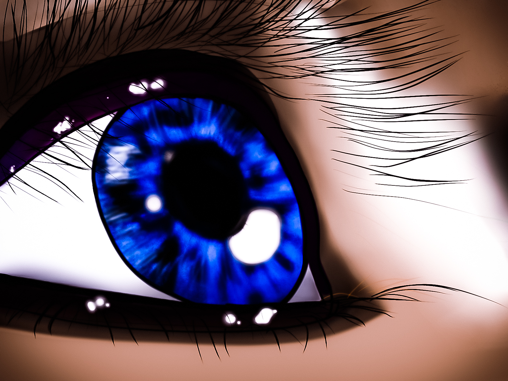

Portfolio Website
Video
Living with the clouds

"Description: For this project I took a photograph of my friend in july 4th when we went to the mountaintop to watch the fireworks. I then used that same photograph as reference to draw my depiction of an eye in Clip studio, which was then edited in lightroom. My art teacher always used to tell us that when we draw, our goal is not to get every detail to make it look realistic, otherwise we would just take a photograph and call it done. In a way he wanted us to bring out our artistic side and to work our minds to depict something using shading, colors, and lines. This project was a way for me to practice the first principles my art teacher taught me and I can say that I am proud of my progress since then.
Youtube